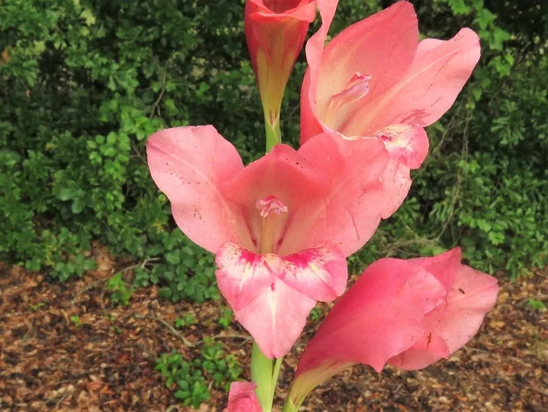

花卉与草本 · 植物界
唐菖蒲 Gladiolus gandavensis

鸢尾科多年生草本，穗状花序自下而上开放，花色丰富，是世界四大切花之一，适合花境与切花栽培。
- 分类
- 门被子植物门纲木兰纲目天门冬目科鸢尾科属唐菖蒲属
- 栖息环境
- 阳光充足的庭园与花圃，喜凉爽通风
- 地理分布
- 原产南非；中国各地广泛栽培，云南、广东为主要切花产区
- 保护级别
- 暂无评估；栽培园艺类群，未见野生居群
物种志
唐菖蒲为鸢尾科唐菖蒲属多年生球根草本，株高 0.6–1.5 米，地下具扁球形球茎。叶片剑形，互生，排成两列。花葶直立，穗状花序着花 10–20 朵，自下而上依次开放，花冠漏斗状，有红、黄、粉、白、紫及复色，花期 6–9 月；果实为蒴果。
唐菖蒲原产南非，是多种野生唐菖蒲杂交选育而成的园艺类群，中国各地广泛栽培。它喜阳光充足、凉爽通风的环境，适宜疏松肥沃、排水良好的沙质土壤。花葶挺拔、花色丰富，是世界四大切花之一，也适合布置花境与庭院；栽培以分球繁殖为主，球茎需每年更新。切花采收宜在花序下部 1–2 朵花开放时进行，采后及时插入清水可延长观赏期。
形态与习性
- 株高0.6–1.5 米，花葶直立
- 花期6–9 月，穗状花序自下而上开放
- 果期花后结蒴果
- 光照喜阳光充足
- 水分喜湿润，忌积水
- 土壤疏松肥沃、排水良好的沙质土
- 主要用途切花、花境与庭院观赏
趣味知识
- 唐菖蒲是世界四大切花之一，与月季、菊花、康乃馨齐名。
- 它的花序自下而上开放，因此切花观赏期很长。
- 唐菖蒲并非原产中国，其亲本多来自南非。
- 球茎需每年更新，退化后开花质量会明显下降。